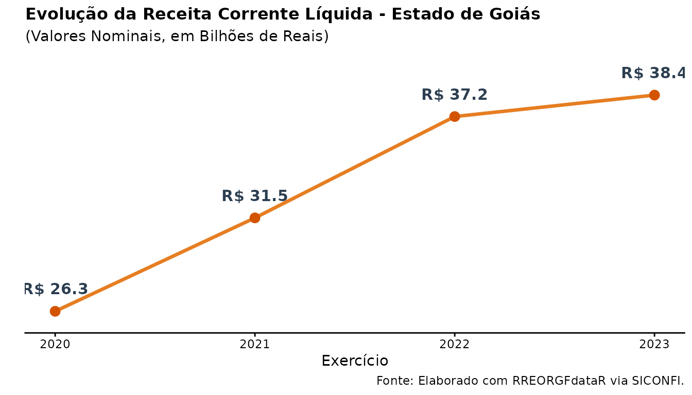
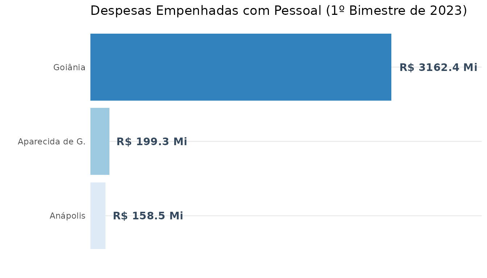

Introdução
Esta vinheta descreve o uso da função RREOdata(). Seu
objetivo é abstrair a complexidade da API do SICONFI, permitindo a
extração rápida e estruturada dos dados do Relatório Resumido de
Execução Orçamentária (RREO).
O Tesouro Nacional disponibiliza uma API robusta para que analistas e
gestores possam avaliar o balanço orçamentário, despesas por função e
apuração da Receita Corrente Líquida (RCL) de todos os entes da
federação. Contudo, a estrutura bruta retornada pela API (como a
marcação temporal <MR-X> para meses de referência)
exige um longo trabalho de limpeza e estruturação antes que os dados
possam ser analisados.
A função RREOdata() resolve esse problema de forma
definitiva. Além de realizar a extração em lote (permitindo passar
vetores de municípios, anos e bimestres simultaneamente), ela traduz
automaticamente os metadados do SICONFI para formatos padronizados,
prontos para a ciência de dados.
Para iniciar, carregamos os pacotes necessários:
Exemplo 1: Análise Longitudinal (Série Histórica)
Neste exemplo, extraímos o Anexo 03 (Demonstrativo da Receita Corrente Líquida) do Estado de Goiás para múltiplos anos, criando uma visualização clara da evolução da arrecadação ao longo do tempo.
# Extraindo dados do 6º bimestre (fechamento anual) de 2020 a 2023
df_rreo_go <- RREOdata(
cod.ibge = 52,
year = 2020:2023,
period = 6,
annex = 3
)
# Filtrando a Receita Corrente Líquida consolidada e plotando
df_rreo_go %>%
filter(
cod_conta == "RREO3ReceitaCorrenteLiquida",
coluna == "TOTAL (ÚLTIMOS 12 MESES)"
) %>%
ggplot(aes(x = exercicio, y = valor)) +
geom_line(color = "#e67e22", linewidth = 1.2) +
geom_point(color = "#d35400", size = 3) +
geom_text(
aes(label = paste0("R$ ", round(valor/1e9, 1))),
fontface = "bold",
vjust = -1.5,
size = 4,
colour = "#2c3e50"
) +
labs(
x = "Exercício",
y = "",
title = 'Evolução da Receita Corrente Líquida - Estado de Goiás',
subtitle = '(Valores Nominais, em Bilhões de Reais)',
caption = "Fonte: Elaborado com RREORGFdataR via SICONFI."
) +
scale_y_continuous(labels = scales::comma, expand = expansion(mult = c(0.1, 0.2))) +
theme_classic() +
theme(
axis.text.y = element_blank(),
axis.ticks.y = element_blank(),
axis.line.y = element_blank(),
plot.title = element_text(face = "bold", size = 12),
plot.caption.position = "panel"
)
Exemplo 2: Análise Transversal (Comparação entre Entes)
A nova arquitetura vetorizada permite passar múltiplos códigos IBGE de uma só vez. Abaixo, comparamos as Despesas Empenhadas (Anexo 01) de três grandes municípios goianos no 1º bimestre de 2023.
# Passando um vetor de municípios: Goiânia, Aparecida de Goiânia e Anápolis
df_municipios <- RREOdata(
cod.ibge = c(5208707, 5201405, 5201108),
year = 2023,
period = 1,
annex = 1
)
# Comparando Despesas Empenhadas
df_municipios %>%
filter(
conta == "PESSOAL E ENCARGOS SOCIAIS",
coluna == "DESPESAS EMPENHADAS ATÉ O BIMESTRE (f)"
) %>%
mutate(
municipio = case_when(
cod_ibge == 5208707 ~ "Goiânia",
cod_ibge == 5201405 ~ "Aparecida de G.",
cod_ibge == 5201108 ~ "Anápolis"
)
) %>%
# PASSO CRÍTICO: Agrupar e somar para garantir uma única linha por ente
group_by(municipio) %>%
summarise(valor = sum(valor, na.rm = TRUE), .groups = "drop") %>%
# Ordenação movida para depois da sumarização
mutate(municipio = reorder(municipio, valor)) %>%
ggplot(aes(x = municipio, y = valor, fill = municipio)) +
geom_col(show.legend = FALSE) +
geom_text(
aes(label = paste0("R$ ", round(valor/1e6, 1), " Mi")),
hjust = -0.1,
fontface = "bold",
color = "#34495e"
) +
coord_flip() +
scale_fill_brewer(palette = "Blues") +
labs(
title = "Despesas Empenhadas com Pessoal (1º Bimestre de 2023)",
x = "", y = ""
) +
scale_y_continuous(expand = expansion(mult = c(0, 0.3))) +
theme_minimal() +
theme(
axis.text.x = element_blank(),
panel.grid.major.x = element_blank(),
panel.grid.minor.x = element_blank()
)
Exemplo 3: Criação de Banco de Dados (Persistência em Parquet)
Para análises massivas, como o acompanhamento de todos os estados brasileiros ao mesmo tempo, consultar a API interativamente pode ser demorado.
A função RREOdata() possui integração nativa com o
pacote arrow. Utilizando o argumento
save_path, você pode fazer o download em lote e persistir
os dados imediatamente em formato .parquet, otimizando
armazenamento e velocidade de leitura futura.
# 1. Extração em lote para todos os estados, salvando direto no HD
RREOdata(
cod.ibge = "all_states",
year = 2023,
period = 1:6,
annex = 1,
save_path = "dados_rreo_estados_2023.parquet"
)
# 2. Leitura otimizada (Lazy Loading) do arquivo gerado
library(arrow)
dataset_rreo <- open_dataset("dados_rreo_estados_2023.parquet")
# O motor C++ do Arrow filtra os dados sem carregar tudo na memória RAM
dados_mg <- dataset_rreo %>%
filter(cod_ibge == 31) %>% # IBGE de Minas Gerais
collect() # Traz apenas o resultado para o R